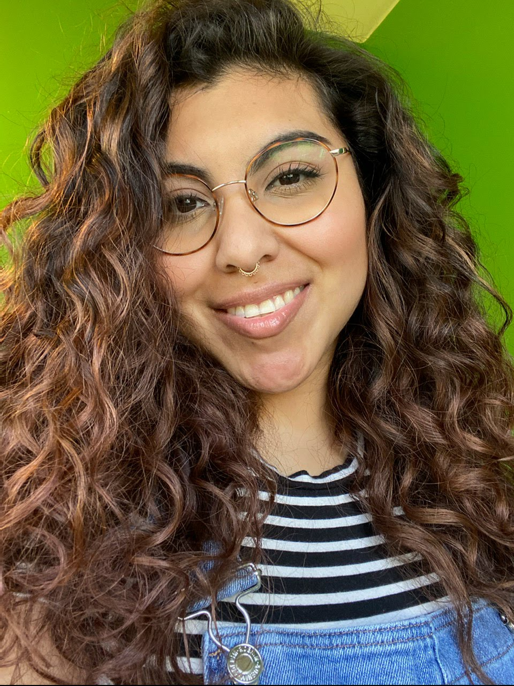
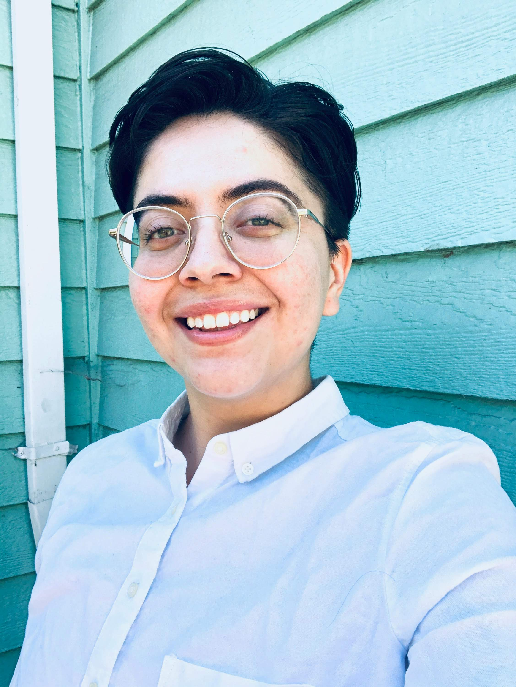
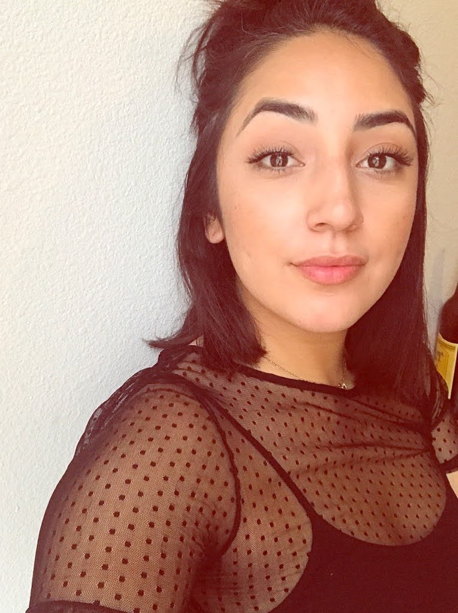
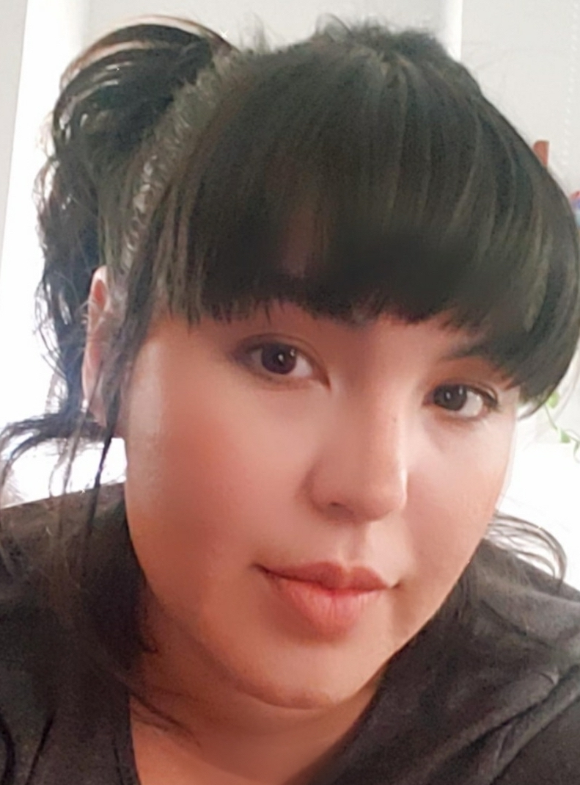

In August 2020 me and three of my closest friends decided to launch our very first podcast! It started when the four of us decided to do a book club for the book, "It Didn't Start With You" by Mark Wolynn. While going through the book we dissected pieces of our generational trauma that came up during certain chapters. We found that a lot of the trauma we were dealing with was living in a lot of Latinx families. Through this process we realized that while these topics can be hard to talk about, someone should, and that someone should be us.
The podcast is called Amigas Crossing because we cross barriers together, but mainly because of our love for Animal Crossing! The group is made up of Angie, Ashley, Olivia and me, Jackie. Angie, Olivia and I went to highschool together on the outskirts of San Antonio. Angie then moved to Portland where she met Ashley and eventually we all came together online. In order from left to right pictured below is Angie, Ashley, Oliva and me.
   We started recording early September and I'm currently in the process of editing it. It will soon be out on Spotify! We are very excited to get the first episode out, even though it's only 20 minutes long. We will be putting out one episode a week and each episode will focus on Latinx issues. We will also be breaking up the tougher episodes with more light-hearted subjects so that things don't get too dreary. I'll be posting a link here when we post our first episode, I hope you like it!
Upcoming Episodes |
||
Episode |
Name |
Length |
| 1 | Introduction Episode | 25 minutes |
| 2 | Get to Know Us | 1 hour |
| 3 | Quarantine | 1 hour |